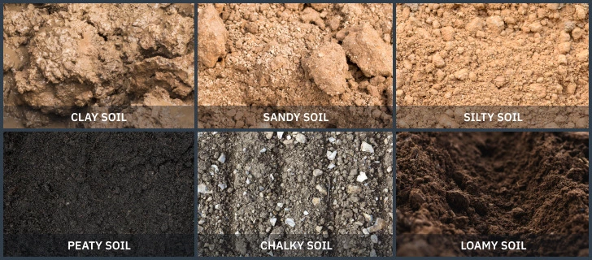

The soils in Maharashtra are as varied as the state’s geography, influenced by factors such as climate, topography, and vegetation. The state features a wide range of soil types, each with unique characteristics that influence agricultural productivity and land use. Understanding these soils is crucial for sustainable land management and agricultural practices.
| Soil in maharashtra |
|---|